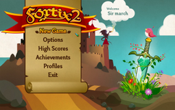
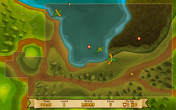
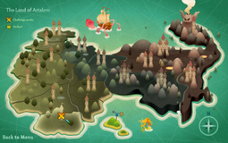
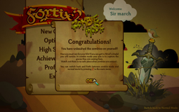

Fortix 2
Dieser Artikel wurde für die folgenden Ubuntu-Versionen getestet:
Ubuntu 14.04 Trusty Tahr
Zum Verständnis dieses Artikels sind folgende Seiten hilfreich:
Fortix 2  ist ein Strategiespiel, welches an Tower_Defense erinnert. Man schlüpft in die Rolle des Ritters Sir Fortix und erobert, in 30 Leveln, nach und nach die Grafschaften und Burgen der Insel Artalom. Im Spiel können verschiedene Boni (z.B. ein neuer Avatar) freigespielt werden. Die Punktanzahl für ein bestandenes Level ist abhängig von der benötigten Zeit und den verlorenen Leben.
ist ein Strategiespiel, welches an Tower_Defense erinnert. Man schlüpft in die Rolle des Ritters Sir Fortix und erobert, in 30 Leveln, nach und nach die Grafschaften und Burgen der Insel Artalom. Im Spiel können verschiedene Boni (z.B. ein neuer Avatar) freigespielt werden. Die Punktanzahl für ein bestandenes Level ist abhängig von der benötigten Zeit und den verlorenen Leben.
Die Steuerung erfolgt wahlweise mit der Tastatur, der Maus oder einem Controller.
|  |  |  |
| Hauptmenü | Spielszene | Levelauswahl |
Installation¶
Steam¶
Das Spiel kann über die Internetseite oder den Client erworben und über letzteren installiert sowie gestartet werden [1].
Konfiguration¶
Unter "Options" kann die Lautstärke der Musik und der Soundeffekte verändert werden. Außerdem kann man sich zwischen Vollbild- / Fenstermodus entscheiden und den Avatar aussuchen, welchen man im Spiel verkörpern möchte.
Tipps & Tricks¶
|  |
| Easter Egg |
Easter Egg¶
Um das Easter Egg freizuschalten fuchtelt man einige Zeit, im Hauptmenü des Spiels, mit dem Schwert über dem Kopf des Vogels herum.
Tastenkürzel¶
| Tastenkürzel | |
| Taste(n) | Beschreibung |
 | Sir Fortix steuern. |
 | Alternative Steuerung. |
| Z | Umschaltung zwischen Normal- und Zombie-Modus. Erst nach Freischaltung möglich. |

Infobox¶
| Fortix 2 | |
| Originaltitel: | Fortix 2 |
| Genre: | Strategie |
| Sprache: | |
| Veröffentlichung: | 2013 |
| Publisher: | Nemesys Games |
| Systemvoraussetzungen: | - |
| Medien: | Download |
| Strichcode / EAN / GTIN: | - |
| Läuft mit: | nativ |
- Erstellt mit Inyoka
-
 2004 – 2017 ubuntuusers.de • Einige Rechte vorbehalten
2004 – 2017 ubuntuusers.de • Einige Rechte vorbehalten
Lizenz • Kontakt • Datenschutz • Impressum • Serverstatus -
Serverhousing gespendet von